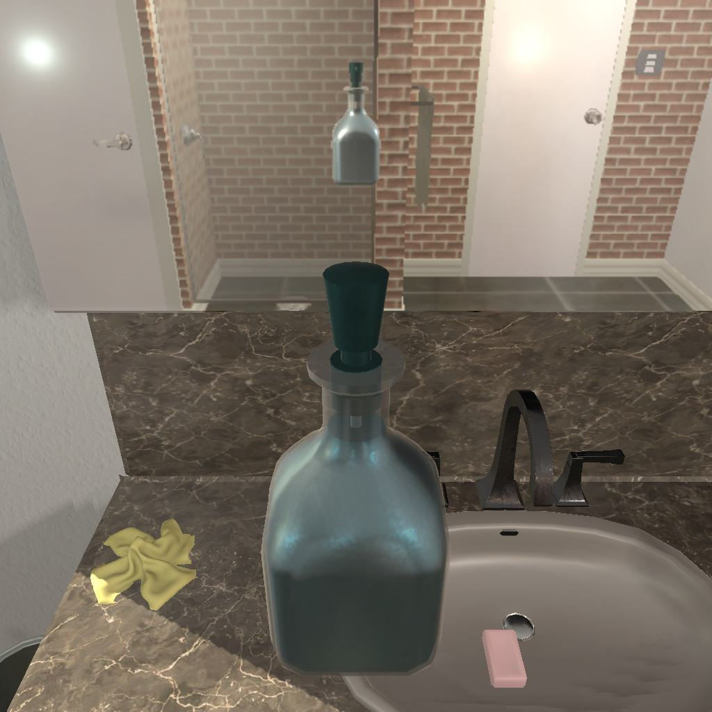
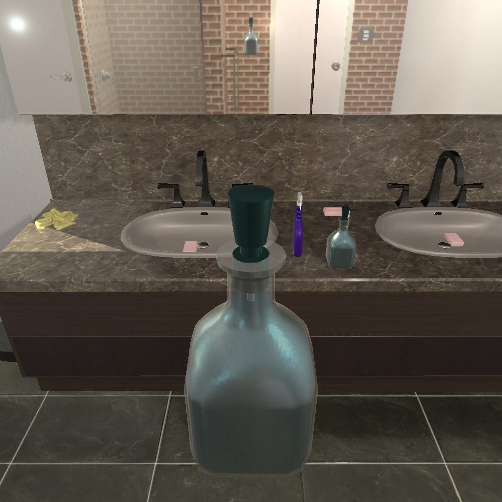

---------------------------------------------------------task: 27---------------------------------------------------------
--------------------------------------------------------------------------------------------------------------------------------------------------------------------
--------------------------------------------------------------------------------------------------------------------------------------------------------------------
Step:--------------------------------------------------------------------------10-------------------------------------------------------------------------------
----------------------------------------
VLM Prompt:
Image1:
Image2:
Image3:
**Instruction**
1. Analyze the provided images to identify all visible household objects and compare the difference between images (e.h. whether the object is opened or not and taken on hand or not), focusing on those relevant to the task description "find two soapbottle and put them in garbagecan."
2. Use the analysis of images and the task hint "The agent must find an object of the desired type, pick it up, find the correct location to place it, put it down there, then look for another object of the desired type, pick it up, return to previous location, and put it down there with the other object." to answer the question: what is the most reasonable action in the choices for the task description "find two soapbottle and put them in garbagecan"?
3. Decide and write the answer using the template: The answer is: (i): , where i is the real number. If there is no desired object in images, search every place based on **Initial Observation** to find the object. And if no one is exactly correct, choose a similar answer.
**Initial Observation**
You are in the middle of a room. Looking quickly around you, you can see countertop (1), sinkbasin (1-2), sink (1-2), garbagecan (1), drawer (1-2), toilet (1), handtowelholder (1)
**Answer Choices**
(1): go to countertop 1
(2): go to sink 1
(3): go to garbagecan 1
(4): go to drawer 2
(5): go to sink 2
(6): go to sinkbasin 2
(7): go to toilet 1
(8): go to handtowelholder 1
(9): open drawer 1
(10): close drawer 1
(11): put soapbottle 2 in/on drawer 1
(12): examine soapbottle 2
(13): examine drawer 1
**Answer**
Let's think step by step by following the instructions.
----------------------------------------
----------------------------------------
Original Response:
Firstly, we analyze the images provided:
Image1 and Image2 do not show any difference; they both depict a soap bottle on the countertop near the sink. No other soap bottle is visible in these images, and the soap bottle is not being held or opened.
Image3 shows a wider view of the room with the same soap bottle on the countertop near sink 1, and another soap bottle is visible on the countertop between sink 1 and sink 2. No soap bottles are being held or opened, and no garbage can is visible in the image.
Based on the task description "find two soapbottle and put them in garbagecan," we need to identify two soap bottles and place them in the garbage can. From the initial observation, we know there is a garbage can at location 1.
Using the analysis and the task hint, the most reasonable action is to pick up the visible soap bottles and put them in the garbage can. However, none of the answer choices directly state "pick up the soap bottle" or "put soap bottle in garbagecan." Therefore, we need to choose the actions that will lead us to pick up the soap bottles.
The most reasonable actions to start would be to go to the locations where the soap bottles are located, which are on the countertop near sink 1 and between sink 1 and sink 2. Since there is no specific action to "pick up" the soap bottle, we assume that going to the location is the first step before picking it up.
The answer is: (1): go to countertop 1 to approach the first soap bottle and then, presumably after picking it up, move to the next step of finding the second soap bottle and ultimately putting them both in the garbage can.
----------------------------------------
----------------------------------------
>>> Refine Original VLM Response and Get Pure Action: go to countertop 1 to approach the first soap bottle and then, presumably after picking it up, move to the next step of finding the second soap bottle and ultimately putting them both in the garbage can
----------------------------------------
-----------------------------------------------------------------
Running time: 46.826894998550415 seconds
Total Money: 17.120019999999993
-----------------------------------------------------------------
-----------------------------------------------------------------
Text Observation:Nothing happens.
-----------------------------------------------------------------
UNSUCCEED